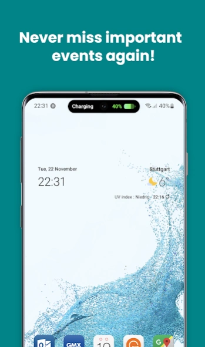
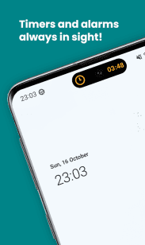

dynamicSpot 原理拆解：Android 上复刻灵动岛的技术代价
dynamicSpot 靠三层权限在 Android 上拼出灵动岛体验，但系统级依赖带来了一个绕不开的问题——权限回收。
第一次在 Android 手机上看到灵动岛效果时，我脑子里冒出来的第一个问题不是"这东西好用吗"，而是"它是怎么活下来的"。
iOS 的灵动岛是系统原生的 UI 容器——系统自己管生命周期、自己处理遮挡、自己决定显示时机。但 Android 不一样，Google 到现在也没给过开发者一个类似的"系统级弹窗锚点"。dynamicSpot 要在这样的平台上复刻灵动岛，得自己把 iOS 系统替它做的那些事一件一件补上。补出来的东西能用，但代价藏在日常使用的每个细节里——比如某天早上起来，你发现那个熟悉的小药丸不见了。
三层权限，一座孤岛
去dynamicSpot的官网上看一眼产品页就能明白，它的整个架构建立在 Android 的三个系统级 API 之上：通知使用权（Notification Listener）、悬浮窗权限（System Alert Window）和无障碍服务（Accessibility Service）。这三个权限各自负责一件事，缺了谁都不行。
通知使用权是"眼睛"——它让 dynamicSpot 能读到其他 App 发出的通知。这是灵动岛能弹出内容的前提。没有这个权限，dynamicSpot 就是个摆设，任何 App 的通知都进不来。悬浮窗权限是"画布"——它让 dynamicSpot 能在所有 App 之上绘制那个黑色小药丸。Android 默认不允许应用随便在别人界面上盖东西，这个权限就是专门留的后门。无障碍服务是"手和脚"——它让 dynamicSpot 能识别用户对灵动岛的点击、长按、滑动手势，还能在锁屏状态下显示弹窗内的直接回复框。
从官方下载或者 Google Play 安装时，这三层权限的授予顺序也是有讲究的——先通知使用权，再悬浮窗，最后无障碍。这三层权限叠在一起，刚好拼出了 iOS 灵动岛的功能轮廓：能看通知、能在任何界面显示、能接收用户操作。但这不是什么优雅的架构。我把它比作"借壳上市"——三个权限本来都不是为这个目的设计的，dynamicSpot 硬把它们凑在一起完成了一个系统本不该让第三方完成的任务。

药丸背后的数据流
dynamicSpot 是怎么让灵动岛"活"起来的？我试着从样本里还原一下它的数据流。
第一步是"捕获"。通知使用权监听系统的通知事件，一旦有新通知进来，dynamicSpot 先做一层过滤——这个 App 在不在用户允许的列表里？通知内容有没有被标记为"不打扰"？通过过滤后才进入下一步。
第二步是"渲染"。dynamicSpot 把通知内容映射成灵动岛上的 UI 元素：标题用大号粗体，内容用灰色小字，有图的显示缩略图，音乐类通知特殊处理成带封面的"音乐岛"。渲染完成后，通过悬浮窗权限把这一层 View 加到 WindowManager 上——这就是那个在所有 App 之上飘着的小药丸。
第三步是"交互"。用户点击灵动岛时，Android 系统先把触摸事件派发给最上层的 Window——也就是 dynamicSpot 的悬浮窗。无障碍服务在这里没有参与事件分发，它的作用是监听手势模式：连续短触记为"点击"，按住超过 500ms 记为"长按"，滑动记为"展开详情"。识别到手势后，dynamicSpot 再决定是展开弹窗、关闭通知还是触发其他快捷操作。
这整条链路的每一环都依赖系统的合作。通知能不能收到取决于通知使用权有没有被吊销，弹窗能不能显示取决于悬浮窗权限有没有被回收，手势能不能识别取决于无障碍服务有没有在跑。三者环环相扣，任何一个掉链子，灵动岛就会"死掉"。
一个绕不开的问题：权限回收
这也是我开头那个疑问的答案：dynamicSpot 能活下来，但活得不好。
Android 的电池优化机制天生就会杀后台进程，而无障碍服务和通知使用权都属于"长期驻留、耗电不明"的权限。厂商 ROM 在后台清理时会优先回收这类权限，尤其是小米澎湃OS 和 vivo OriginOS——样本里明确提到这两个品牌"会在后台清理时自动关闭无障碍服务"。华为 Mate 60 系列还有个专属的 12px 偏移 bug，需要强制开启全屏显示才能修。
当灵动岛突然消失时，90% 的情况重启 App 就能解决——重新走一遍三个权限的检查，触发系统重新授予。但如果一天消失两次以上，问题就更深了：无障碍服务被回收了、通知使用权被重置了，或者后台进程直接被杀了。这时候光重启不够，得手动去系统设置里把权限重新打开，再把 dynamicSpot 加入电池优化排除列表。具体每一步操作可以翻dynamicSpot文档里的权限排查章节，对不同品牌 ROM 有专门的路径说明。

这套设计适合谁
聊到这里，判断其实已经很清楚了。dynamicSpot 的设计目标不是给 Android 造一个完美的灵动岛替代品，而是用最小的系统侵入换来一个"能用"的灵动岛体验。它在技术上做了很多妥协：
- 依赖三个高权限才能工作，任何一个被回收就失效
- 位置记忆不持久，系统重启悬浮窗会重置位置（Pro 版才有锁定功能）
- 各品牌 ROM 的兼容性问题需要逐个适配
但它也有 iOS 灵动岛没有的灵活性——Pro 版的音乐可视化功能可以让波形条跟着封面主色调走，灵敏度可调，样式有 Bar、Wave、Dots 三种。这种自定义能力反过来也说明了 dynamicSpot 的定位：它不是系统功能，它是一个可以被折腾的玩具。
适合谁呢？如果你就是想要 iOS 那个小药丸的视觉效果、愿意花两分钟排一下权限回收的问题，dynamicSpot 完全够用。但如果你期待一个像 iOS 灵动岛那样稳定、无感、永不消失的系统级体验——那不是 dynamicSpot 能给你的，那是 Android 系统本身还没开放的能力边界。
dynamicSpot 的开发资料在GitHub主仓以及国内的Gitee、GitCode镜像都有同步维护，音乐可视化、电池岛、通话控制这些 Pro 版功能的细节也有完整说明。我自己用下来的感受是：它能活，但活得挺费力；能用，但偶尔得帮它续续命。不过话说回来，在 Android 上能做到这一步，已经挺不容易了。